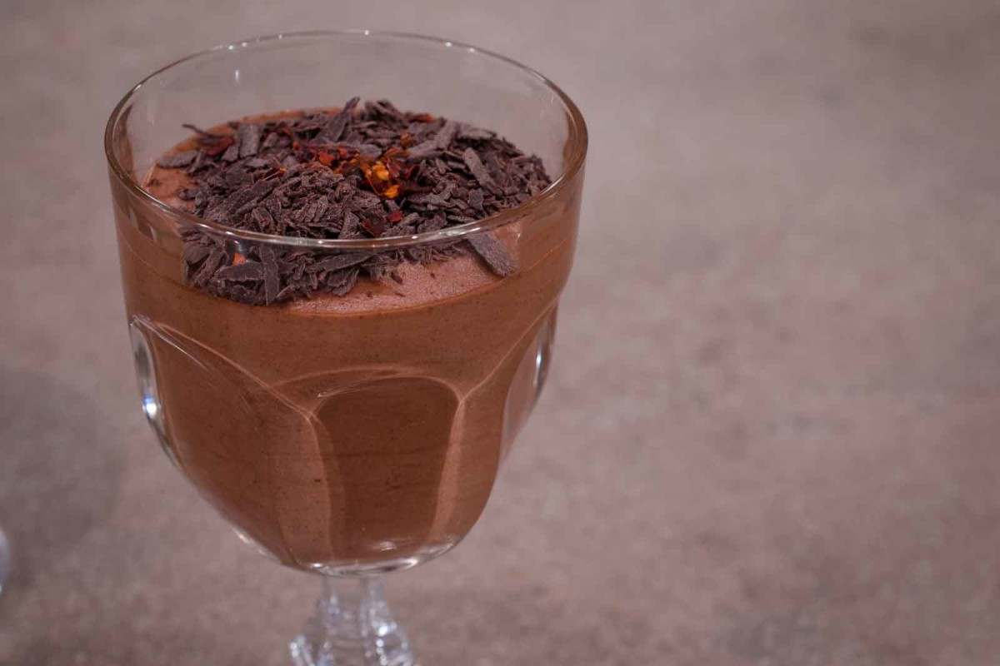

Μους σοκολάτα γάλακτος

Υλικά
- 400 γρ. κουβερτούρα γάλακτος λιωμένη σε μπεν μαρί ή στον φούρνο μικροκυμάτων
- 500 γρ. κρέμα γάλακτος 35-36%
Εκτέλεση
- Βάζουμε τη λιωμένη κουβερτούρα σε ένα μπολ.
- Σε μία κατσαρόλα ζεσταίνουμε τη μισή κρέμα γάλακτος (250 γρ.) και, λίγο πριν βράσει, την αδειάζουμε πάνω από την κουβερτούρα και ανακατεύουμε με μια κουτάλα ή με μαρίζ, μέχρι να γίνει ένα ομοιογενές μείγμα (γκανάζ).
- Χτυπάμε την υπόλοιπη κρέμα γάλακτος (250 γρ.) στον κάδο του μίξερ με το σύρμα ή με μίξερ χειρός, μέχρι να γίνει παχύρρευστη σαν γιαούρτι.
- Μόλις η γκανάζ κρυώσει ελαφρώς, ενσωματώνουμε την παχύρρευστη κρέμα, ανακατεύοντας απαλά με μία κουτάλα .
- Αδειάζουμε τη μους σε ποτήρια ή μπολ και τα βάζουμε στο ψυγείο για περίπου 3 ώρες πριν τα σερβίρουμε.
Λίγες ακόμα συμβουλές
Μπορούμε να αρωματίσουμε την γκανάζ με ξύσμα από πορτοκάλι ή λεμόνι ή με 30 γρ. ποτό την αρεσκείας ,μας ή μπορούμε να γεμίσουμε με την μους μια ψημένη τάρτα.